Introduction
This is a semester-long project for our HCI foundations class, and we decide to focus on solo travelers at airport who, based on our survey to 50+ people, frequently felt bored, anxious, tired, or "trapped in the airport".
Our research has shown that the type of mood that travelers are in depends largely on the duration of the layover, their ease of movement through the airport, and the facilities and amenities present. Thus, we define our initial problem space as helping travelers with long layovers alleviate boredom at the airport.
However, after consulting with our TA and professor, we found that the airport environment seemed primed for creating new connections with people as there are already a group of diverse individuals at an airport in close proximity.
Thus, we rephrased our problem statement as:
How might we create a thriving community of flight travelers across the world?
User group
We have defined young solo travelers as our primary user group. The key characteristics of this group is that they are often traveling alone, usually on a budget, and particular open to knowledge or cultural exchanges.
Based on our 10+ interviews with the primary users, we developed the following persona:
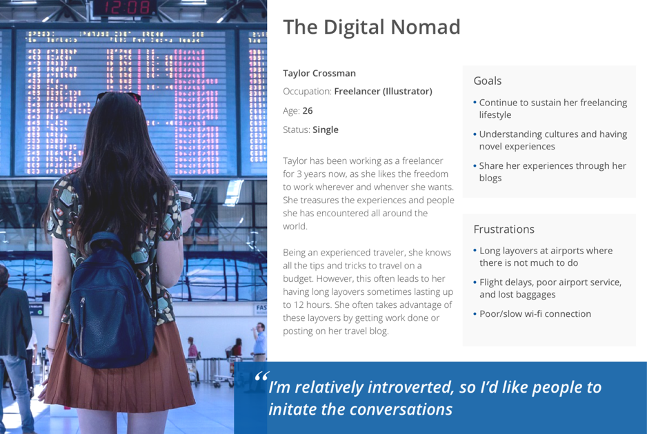
Research
We had three main research goals:
Learn about people’s social experience at the airport (if any)
Learn about people’s current social interaction habits
Derive design implications for creating a social networking solution at an airport
We wanted to understand if and how social interactions would change in an airport context. There are additional factors to consider including: safety, personal belongings, time management, and a constrained space.
Method
We conducted a focus group of 5 participants to discuss the social interactions at the airport, and found the following key insights:
1.
Proximity - conversations may happen at the gate, restaurant, or wherever the travelers are due to the density of people at an airport
2.
Others initiate - travelers, especially those who tend to be more introverted, prefer to engage in conversation only if others start it first
3.
Similar interests - there needs to be some common ground in order for a conversation to take off or be memorable
4.
Open to connect - most travelers won’t specifically seek out social interactions at an airport, but said they would be open to the idea of connecting with other travelers
5.
Knowledge sharing - conversation topics usually included travel experiences, and career interests
6.
Beyond the airport - conversations also commonly occurred on the plane itself when sitting next to each other, sometimes even exchanging contacts (however, never really followed up with each other)
7.
Safety - people usually are always concerned with safety, but we wanted to note in several of our interviews, they thought safety was not a particular issue because everyone had already passed through the security check
8.
Everything still depends - interest in social interactions heavily dependent on mood, energy levels, physical appearance, airport layout etc.
Ideate
We began our brainstorming process by having each of our team members do two rounds of ‘Crazy 8’s’, a rapid brainstorming technique where we had five minutes to come up with eight ideas with a five minute break between the rounds.
After the team idea generation, we captured the more “completed” ideas on sticky notes and grouped them together into various themes.
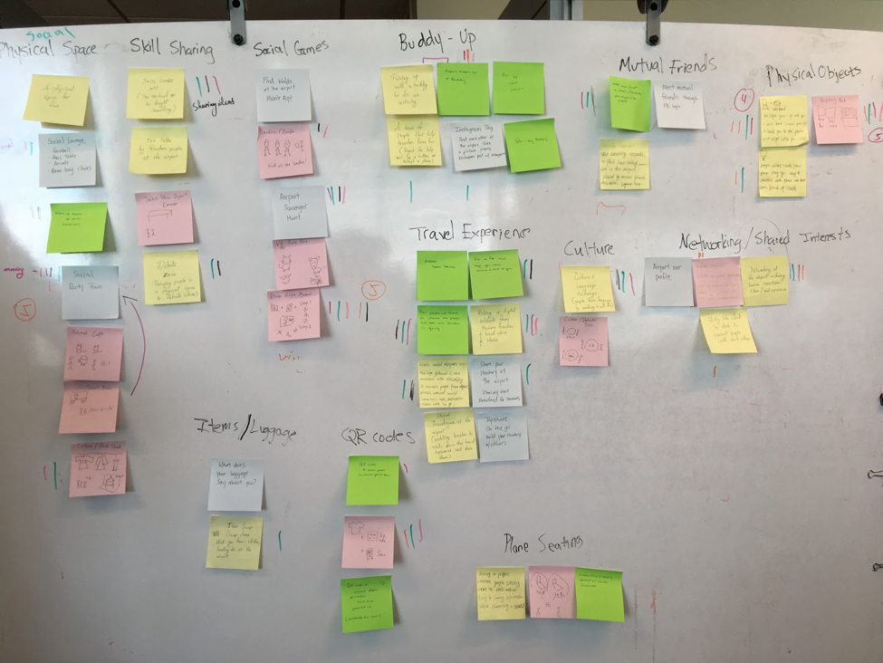
Grouping ideas with similar traits together and voted on them as a team
Selection Process
After the ideas were aggregated and grouped into themes, the team voted on as many specific ideas they would like in order to converge onto potential solutions. Since our ideas were based on our research, we did not have any strict criteria for voting such as feasibility or practicality.
As a result, we ended up converging on the top three themes based on the most voted on ideas: game, knowledge exchange, and physical space.
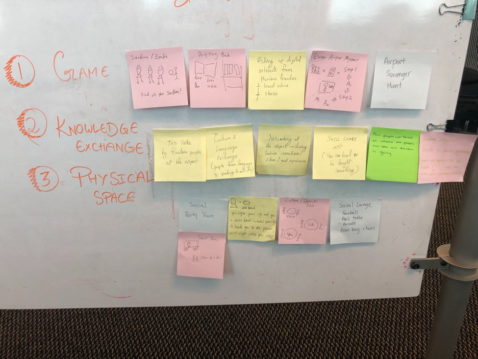
After voting on ideas, we converged onto three themes: game, knowledge exchange, physical space
With our mind map and three themes, each team member then explored ideas around these themes with a rough storyboard and low-fidelity sketches that would lead to the creation of our design alternatives.
Design alternatives
To get feedback on our design alternatives, we created a poster with storyboards to help viewers visualize the user flow during our poster session, and asked them to leave sticky notes about their most and least favorite ideas

Our design idea poster
Afterwards, we created medium-fidelity prototypes for each design ideas and talked to users individually to get more-detailed feedback.
Cultural Swap
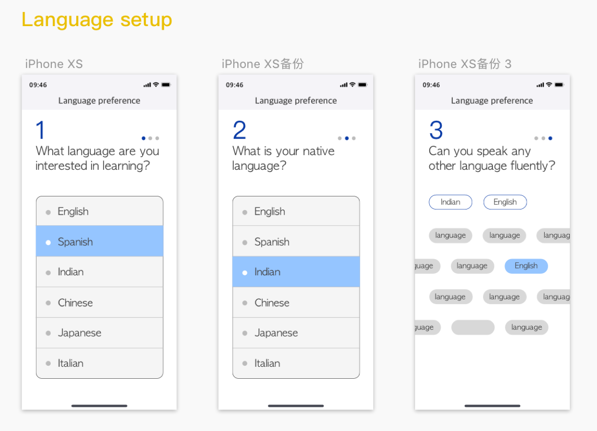
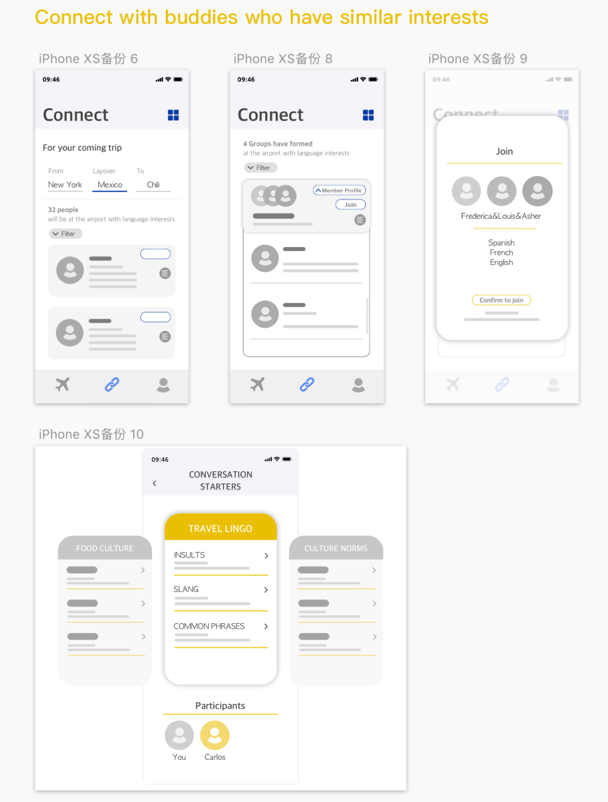
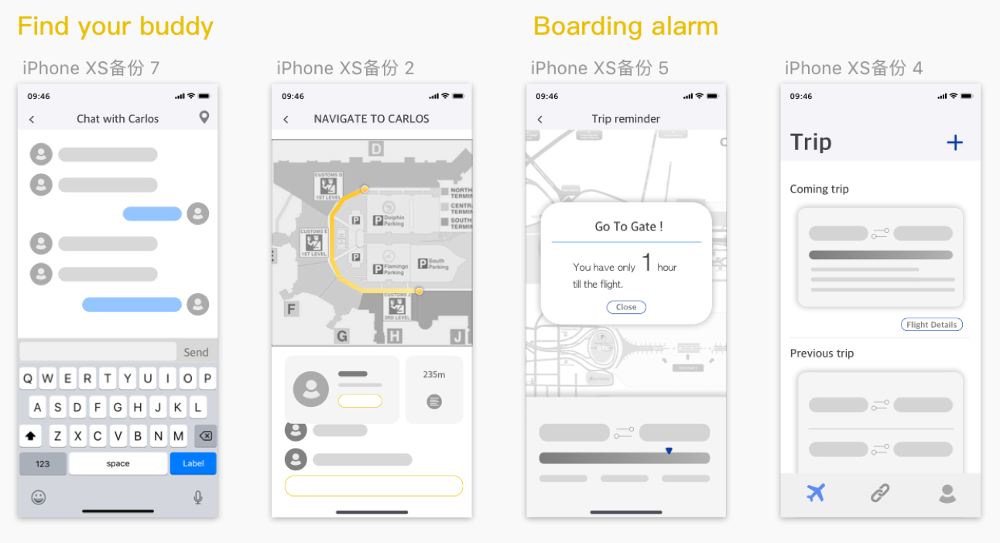
Based on the feedback we received for language exchange hub, we created a pros-and-cons table.
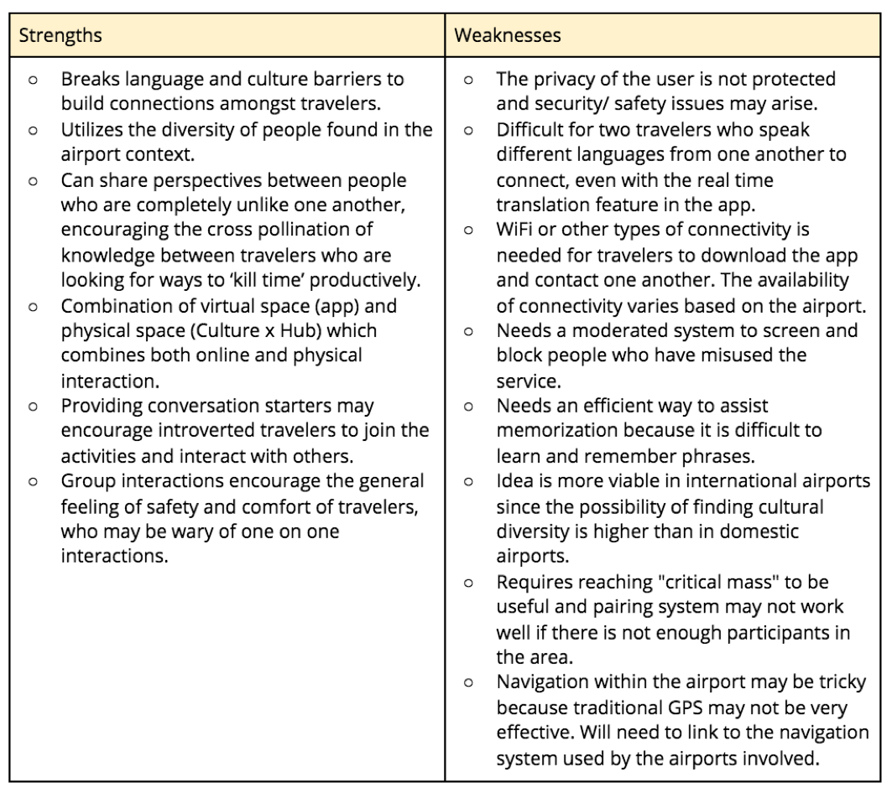
Drifting Bottle
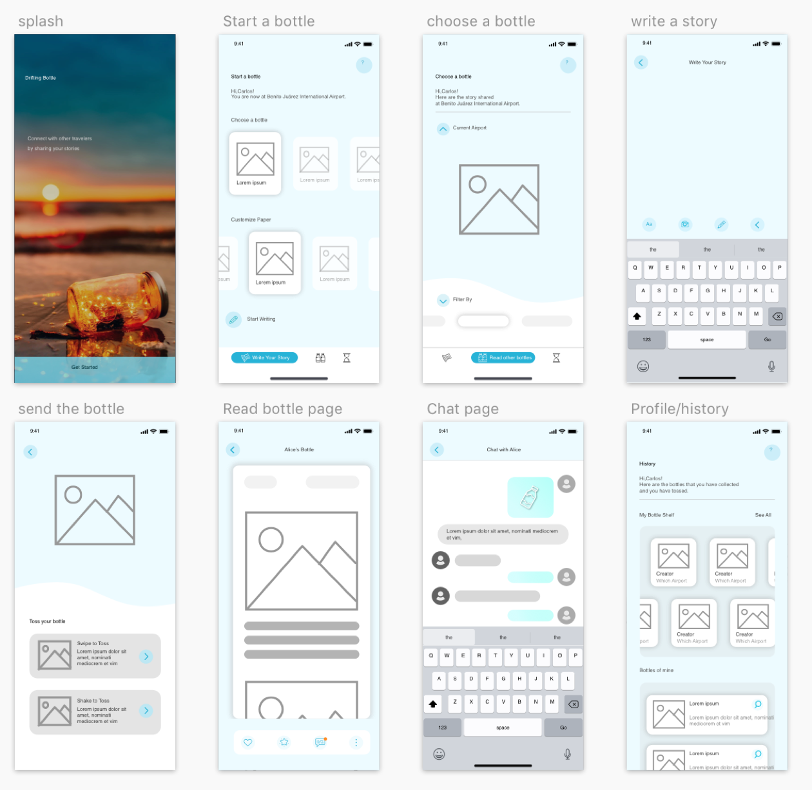
Based on the feedback we received for drifting bottle, we created a pros-and-cons table.
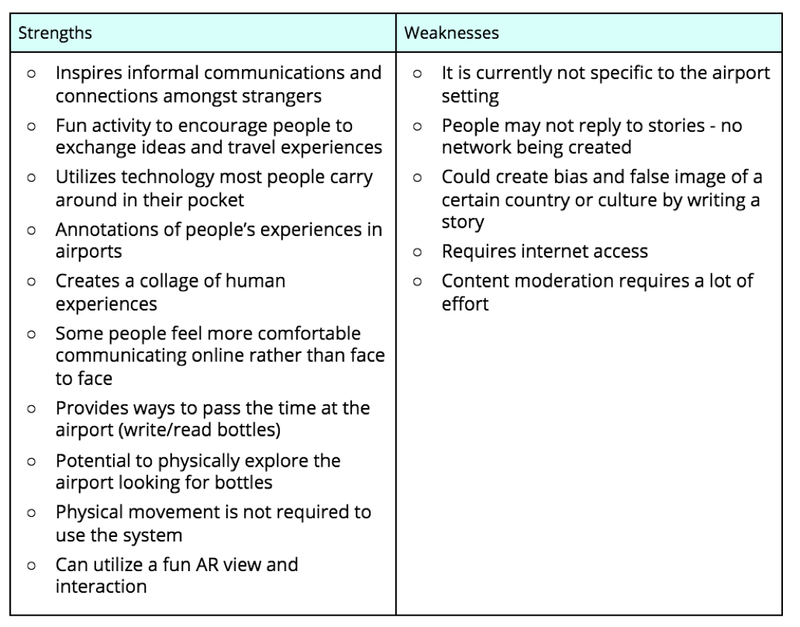
Airport Escape
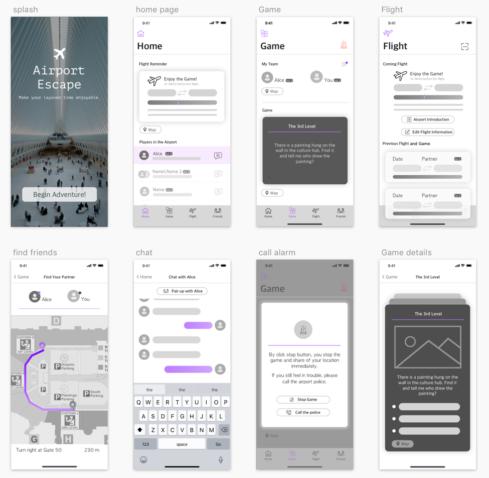
Based on the feedback we received for airport escape, we created a pros-and-cons table.
Prototype
Work in Progress
Testing
Work in progress
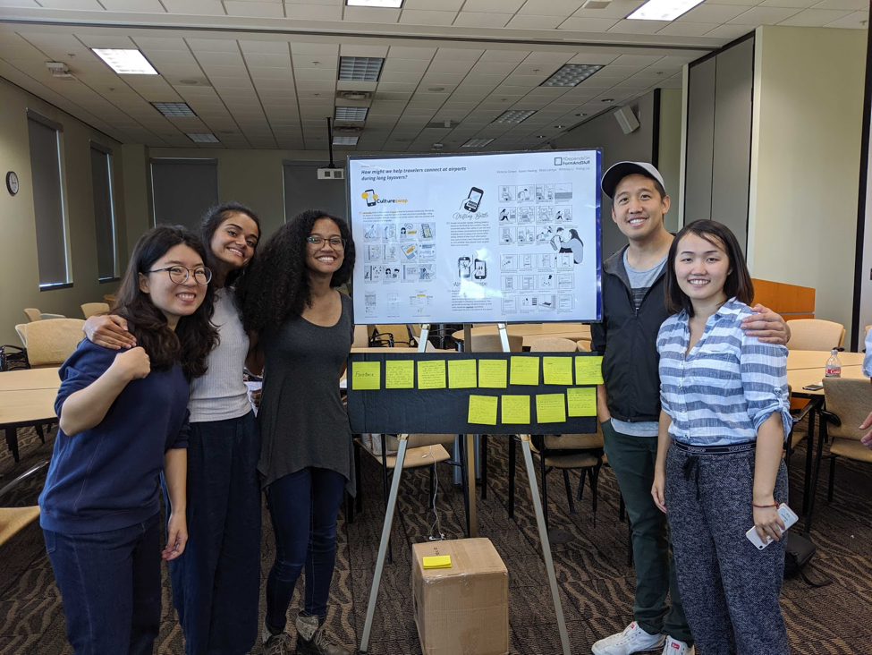
Team Photo at poster feedback session :)